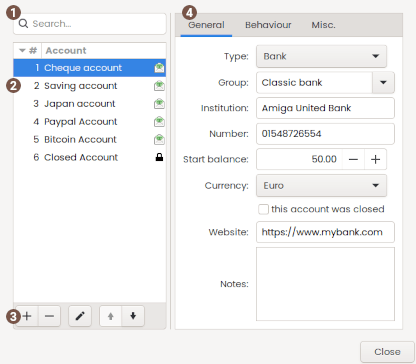
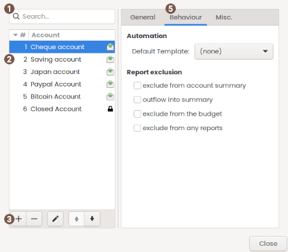
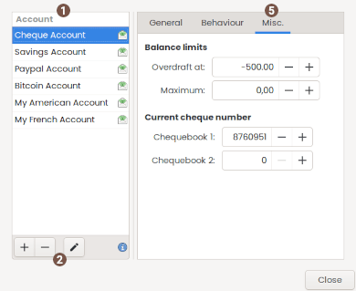
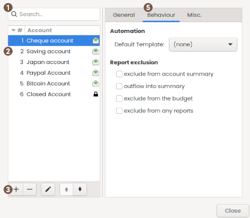
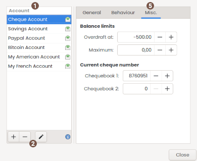

Using accounts dialog
 Quick search
Quick search
A quick search text filter. You can use CTRL+F to activate and ESC to clear.
 Account list
Account list
display the actual list of accounts in the wallet. The account at the top of the list will be the one to be displayed when opening your wallet. You can easily change the accounts order using the header and move up and down button.
= account is part of the budget
 Buttons
Buttons
| Add | add a new empty account. |
|---|---|
| Delete | delete the active account. This is only possible if the account has no transactions. |
| Edit | edit the active account. |
| Move up (1) | move the active account up. |
| Move down (1) | move the active account down. |
(1) you cannot move accounts if the sorting is not by number ascending.
 General
General
| Type | the type of the account, as described into the lexicon |
|---|---|
| Group | the group name of the account |
| Institution | the bank name where the account is registered. |
| Number | the bank account number itself. |
| Start balance | the initial balance amount, i.e the balance before the first transaction. |
| Currency |
the currency of the account, you can manage this list with the currencies dialog If the account you change contains internal transfer, any target account will change of currency as well |
| This account was closed | the bank account is closed. please also note that closed account are no more considered for reports. |
| Website | optional website you may want to add, you will have a browse button in Your accounts and a menu into the ledger window. |
| Notes | optional notes you may want to add |
 Behavior
Behavior
| Default template | the template transaction prefill new transaction with. From the main window, the template will work only if you preselect an account in 'Your accounts' list From the main window, the template will work only if you preselect an account in 'Your accounts' list |
|---|---|
| Exclude from account summary | the account will must not be used into the account summary list of the main window. |
| Outflow in summary | the account will be aside any total in the summary list of the main window. |
| Exclude from the budget | the account will not be used for the budget data. |
| Exclude from any reports | the account will not be used for any report data. |
 Misc.
Misc.
| Overdraft at | the balance threshold, if you have an authorized balance, this will be used in the Balance report window. | Maximum | the maximum amount for this account |
|---|---|
| Chequebook 1 | the next cheque number of first pad to be used (this is auto updated later when you add some transactions). |
| Chequebook 2 | some of the above but for a second cheque pad (for a joined account) |